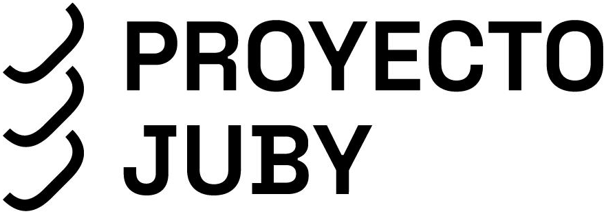
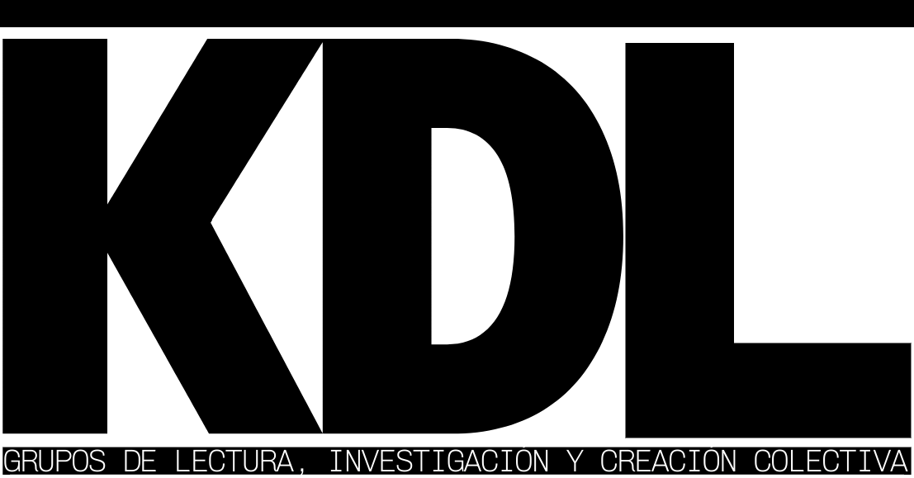

ponencias, simposios, micro abierto,
dj set & performance
jornadas de aceleracionismo y pensamiento especulativo
Las jornadas surgen como un laboratorio de urgencia teórica: un espacio de creatividad radical diseñado para especular sobre los futuros contingentes que ya están operando en nuestro presente.
El objetivo es superar las restricciones formales del academicismo para dar paso a un pensamiento nómada, disperso y de vanguardia desde cualquier ámbito del conocimiento.
VIE 02.10.26 · 17-21 H @
Facultat de Filosofia
i Ciències de l’Educació
Saló de Graus
entrada libre
- Joshua Beneite: Inteligencia, espíritu y anonimato: implicaciones pedagógicas
- Luis Giner: Presentación del libro Homo Noumenon
- Xavier Laudo: Aceleracionismo ascético
- Diego Medina: Movimiento de aceleración por una causa perdida
- Joan Palomares: Robotina también será puta
- May Polo: Manifiesto para una estética desintegracionista
SAB 03.10.26 · 10-13 / 18-22 H @
Centro Cultural Juby
La Petxina
10-13 H Presentación de las propuestas recibidas y micro abierto para cualquier persona que quiera participar, sin requisitos de forma, titulación o estructura previa.
18-22 H · cierre de las jornadas Porque el pensamiento especulativo no puede disociarse de la experiencia sensible y corpórea, las jornadas cierran cruzando la línea entre la teoría y la carne mediante la dispersión corporal y el exceso sonoro: tardeo con sesión de DJ y performance.


